Algoritmo de Karatsuba


Entendendo o Algoritmo
Para entender o Algoritmo de Karatsuba, o jeito mais simples é fazendo as contas na mão e verificando se o resultado bate com o esperado:
Exercício
Faça a seguinte multiplicalção utilizando o algoritmo: \(3408 \times 1735 = \,?\)
Lembrando que o passo a passo do algorítmo é:
Separar ambos os números em duas partes:
- Primeiro número em a e b;
- Segundo número em c e d.
Achar P e S, que são respectivamente: \(a \times c \; \; e \; \; b \times d\);
Calcular \(\; T \, = \; (a + b) \times (c + d)\);
Calcular \(Q\) que é igual a \((ad + bc)\) porém pode ser obtido por \(\; T - S - P\);
E finalmente chegar no resultado final: \[R \, = \; P \times 10^n + Q \times 10^{n/2} + S\]
Sendo \(n\) o número de algarismos.
Gabarito
Separando os números:
- \(a = 34\)
- \(b = 08\)
- \(c = 17\)
- \(d = 35\)
Achando \(P \; e \; S\):
- \(P: \; 34 \times 17 = \; 578\)
- \(S: \; 08 \times 35 = \; 280\)
Calculando \(T \,\): \(\; (34 + 08) \times (17 + 35) = \; 2184\)
Calculando \(Q \,\): \(\; T - S - P = \; 1326\)
Resultado final: \[R: \; 578 \times 10^4 + Q \times 10^{4/2} + S = \; 5.912.880\]
Agora você deve estar pensando “esse método é inútil… faço muito mais rápido na calculadora”, mas não é exatamente assim que seu computador pensa! Antes de entender porque o algoritmo de karatsuba é mais rápido no computador precisamos analisar como ele seria construido em código.
Veja o pseudocódigo a seguir e analise-o:
karatsuba(num1, num2):
if (num1 < 10) or (num2 < 10)
return num1 × num2
# Calcula o tamanho dos números.
m = min(size_base10(num1), size_base10(num2))
m2 = floor(m / 2) # Pega o menor número de algarismos e divide por 2
# Separa os números em duas partes.
high1, low1 = split_at(num1, m2)
high2, low2 = split_at(num2, m2)
# 3 chamas recursivas feitas para números de aproximadamente metade do tamanho (n/2).
z0 = karatsuba(low1, low2)
z1 = karatsuba((low1 + high1), (low2 + high2))
z2 = karatsuba(high1, high2)
return (z2 × 10 ^ (m2 × 2)) + ((z1 - z2 - z0) × 10 ^ m2) + z0
“Tá… continuo achando esse processo todo inútil, olha quanta linha pra fazer uma multiplicação comúm!”. Realmente ainda parece improvável que esse método seja mais rápido que uma multiplicação comúm, então vamos fazer o seguinte:
Exercício
Vamos calcular a complexidade do algoritmo de karatsuba, lembra como faz?
Dica
São três chamadas recursivas que recebem \(\frac{n}{2}\) como parâmetro.
Gabarito
imagem da árvore aqui
resolução da complexidade aqui
Olha só, chegamos em \(O(n^{1.58496250072})\), acredita em mim agora que karatsuba consome menos tempo que uma multiplicação comúm?
-
listas;
-
ordenadas,
assim como
-
listas;
-
não-ordenadas
e imagens. Lembre que todas as imagens devem estar em uma subpasta img.
Para tabelas, usa-se a notação do MultiMarkdown, que é muito flexível. Vale a pena abrir esse link para saber todas as possibilidades.
| coluna a | coluna b |
|---|---|
| 1 | 2 |
Ao longo de um texto, você pode usar itálico, negrito, vermelho e tecla. Também pode usar uma equação LaTeX: \(f(n) \leq g(n)\). Se for muito grande, você pode isolá-la em um parágrafo.
\[\lim_{n \rightarrow \infty} \frac{f(n)}{g(n)} \leq 1\]
Para inserir uma animação, use ; seguido do nome de uma pasta onde as
imagens estão. Essa pasta também deve estar em img.
 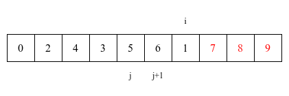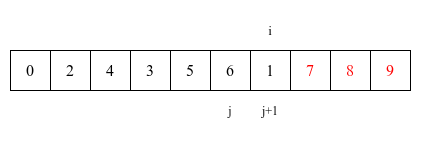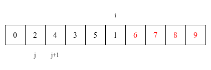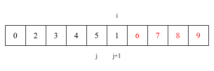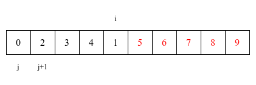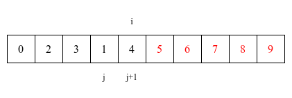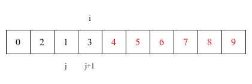
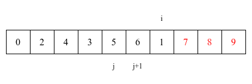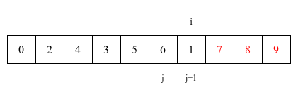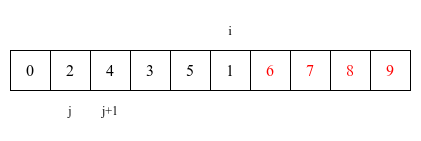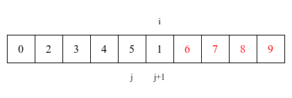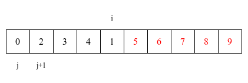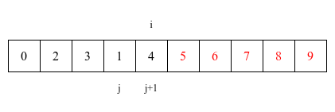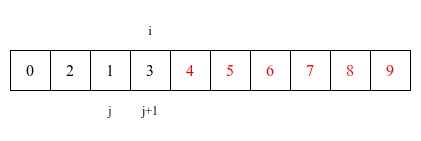 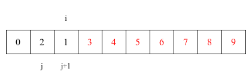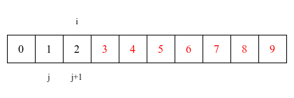
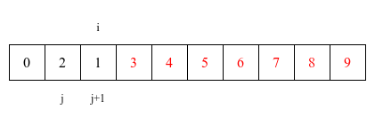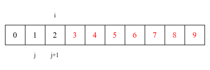Você também pode inserir código, inclusive especificando a linguagem.
def f():
print('hello world')
void f() {
printf("hello world\n");
}
Se não especificar nenhuma, o código fica com colorização de terminal.
hello world
Aviso
Este é um exemplo de aviso, entre
!!!.
Exercício
Este é um exemplo de exercício, entre
???.Gabarito
Este é um exemplo de gabarito, entre
:::.